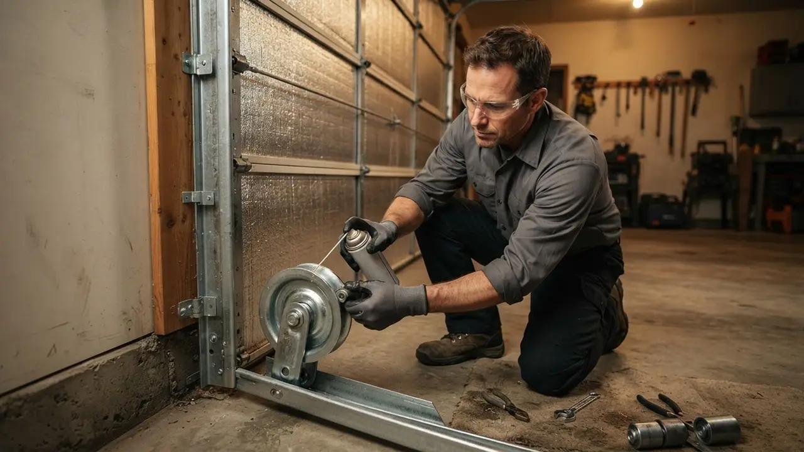
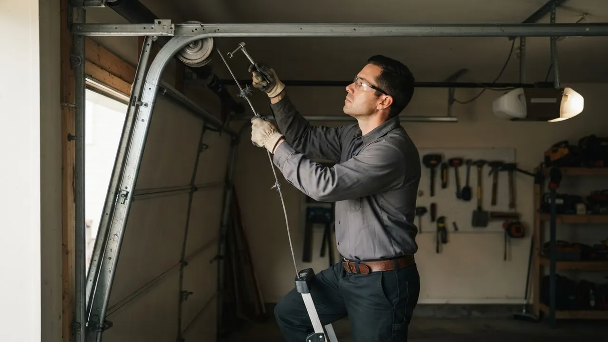
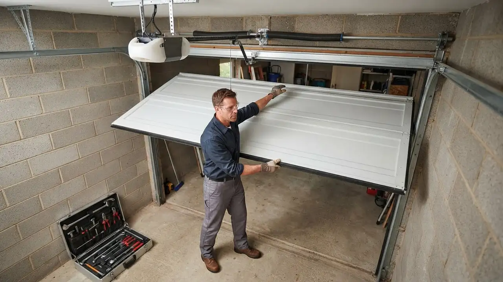

Garage Door Bearing & Bushing Repair
Garage Door Bearing Repair Wilmington DE You Can Count On
Garage Door Bearing Repair Wilmington DE homeowners call us for starts with the parts that actually carry the door's weight: the bearings and bushings inside your track brackets, cable drums, and torsion assembly. When they wear out, your door grinds, shudders, or stalls halfway up. We diagnose the noise, replace the worn bearing or bushing, and test the full cycle before we leave your driveway.
Service overview
What Garage Door Bearing Repair Wilmington DE Involves
Garage Door Bearing Repair Wilmington DE is a mechanical repair service that replaces the worn bearings and bushings your garage door rides on, restoring smooth, quiet travel along the track. Bearings sit inside the end plates and center brackets that hold your torsion shaft; bushings cushion the hinge points and roller stems. When either wears, metal grinds on metal, the door pulls unevenly, and your opener motor works twice as hard to lift the same weight.
Most Wilmington doors we open up are 10 to 20 years old, and the bearing plates have never been touched. In the older housing stock around Trinity Vicinity and Hedgeville, we regularly find seized bearings paired with a snapped cable or a tired torsion spring, because one failure drags the next along with it. If your door sounds like a freight train every morning, that is your cue to book garage door bearing service Wilmington DE before the opener burns out too.

Practical benefits
Why Bearing and Bushing Repair Pays Off
Worn bearings are cheap to fix and expensive to ignore. Here is what a proper bearing and bushing replacement does for your door, your opener, and your mornings.
Quieter Door Operation
New nylon rollers and fresh bearings cut the grinding and squealing that wakes the house at 6 a.m. Most customers notice the difference on the very first cycle. If your garage door bearing is making noise in Wilmington DE, replacing the worn plate and rollers usually drops the sound level dramatically.
Longer Opener Life
A binding door forces your LiftMaster or Chamberlain motor to pull 30 to 50 percent more current on every cycle. That heat kills gears and control boards early. Fixing the bearing removes the drag, so the opener runs cool and lasts years longer than it would otherwise.
Even, Safe Door Travel
A door that jerks or hangs on one side is a door that can come off track. Replacing worn bushings and bearings restores balanced travel, so the door seats squarely on the floor and the safety reverse still trips correctly under the UL 325 standard.
Cheaper Than a New Door
A full bearing and bushing job runs a fraction of what a new door costs, and it solves the noise and binding at the source. We have kept doors in Wawaset Park and The Highlands running smoothly for years with nothing more than fresh bearings, rollers, and a tune-up.
How service works
How Our Bearing Repair Process Works
You get a clear sequence from the first phone call to the final test cycle. Here is exactly what happens when you book bearing or bushing work with us.
STEP 01
Phone Diagnosis
Call (302) 556-5080 and describe the noise, the shake, or the stall. We ask a few quick questions about door age and opener brand, then book a same-day or next-morning window. Most Wilmington calls get a two-hour arrival window, not an all-day wait.
Tools and methods
Tools and Methods We Use
Winding bars
Solid steel bars used to safely relieve and re-set torsion spring tension before we touch the bearing plates. No shortcuts, no improvised tools.
Vise grips and C-clamps
We clamp the torsion shaft in place so it cannot spin while we pull the bearing plates. This keeps the door from dropping during the repair.
Socket wrench set and power drill
Used to remove and re-torque bearing plate bolts, hinge screws, and track brackets to the manufacturer's spec.
Tape measure and level
We check shaft height, track plumb, and door square before and after the repair so the new bearings sit true.
Rubber mallet and screwdriver set
For seating new bushings and rollers without marring the hardware, and for prying stubborn hinge pins free.
Safety glasses and gloves
Standard on every job. Torsion work involves stored energy, and we treat it that way from the first clamp to the last test cycle.
UL 325 safety reverse testing
Every repaired door is tested against the UL 325 standard with a 2x4 under the door. The opener must reverse within two seconds of contact, or we adjust the limits until it does.
DASMA and IDEA installation standards
We install bearings, bushings, and rollers to DASMA and IDEA spec, which covers torque values, shaft alignment, and hardware grade. That is why our repairs hold up.
ANSI/DASMA 102 compliance
The safety standard for garage door systems guides how we balance the door, set spring tension, and verify that all hardware is rated for the door's weight.
Lithium-based lubrication schedule
We use lithium-based grease on bearings, hinges, and rollers, and recommend re-lubricating every 6 to 12 months. Wilmington humidity dries out lighter greases fast.

Where this service fits
When Wilmington Homeowners Call Us
A 15-year-old door in The Highlands starts grinding loudly in cold weather.
Cold thickens the grease in worn bearings, which is why the noise shows up in January. We replace the bearing plates and rollers, then lubricate with a cold-rated grease that stays fluid through Delaware winters. The door runs quiet all winter, and the opener stops straining on cold mornings.
A rental property near the Riverfront has a door that shudders and hangs on one side.
We inspect the torsion assembly, find a seized bearing on the binding side, and replace it along with the worn bushings. The door gets rebalanced and the safety reverse re-tested. The tenant stops calling about the noise, and the door passes a full safety check.
A homeowner in Cool Spring hears a pop and finds the door stuck halfway open.
We respond same-day, find a snapped cable caused by a seized bearing and worn drum, and replace all three parts in one visit. The door is rebalanced and tested through five full cycles. The car is out of the garage the same day, and the door runs smoothly on new hardware.
A commercial bay door in Southbridge is cycling 40 times a day and the bearings are shot.
We service the door after hours so the business does not lose a day. High-cycle bearing plates and rollers go in, and the door is tested under full load before we hand it back. The bay is back in service the next morning with hardware rated for daily commercial use.
Local execution
How Bearing Repair Runs in Wilmington
Wilmington's housing stock is a big part of why bearing work looks different here than in a new-build suburb. Most of the city's detached and attached garages date from the 1920s through the 1970s, and many still run the original torsion hardware. Add coastal humidity off the Christina River, road salt tracked in from I-95 all winter, and freeze-thaw cycles that swing 30 degrees in a day, and you get bearings that dry out and seize years before their rated life. We see the same pattern in Trinity Vicinity rowhouses and Brandywine Village carriage garages: a grinding bearing, a stretched spring, and a frayed cable all failing within months of each other. When you call for garage door bushing repair in Wilmington, Delaware, we inspect the whole torsion assembly, not just the noisy part, because fixing one worn component while its neighbor is on the way out just means a second service call. We also work to Delaware contractor license requirements and pull permits when a job needs them. If you are searching for garage door bearing repair in Trinity Vicinity Wilmington DE, we are already in the neighborhood most weeks.
Trinity Vicinity
Rowhouse garages here are tight, often with low headroom. We bring compact winding bars and work carefully around shared walls.
The Highlands
Many detached garages date to the 1920s and still run original bearing plates. We keep period-appropriate hardware on the truck.
Riverfront
River humidity accelerates bearing corrosion. We see seized plates here at 8 to 12 years instead of the usual 10 to 15.
East Side
Older steel doors with heavy panels put extra load on bearings. We match replacement plates to the door weight, not a generic size.
Coastal humidity off the Christina River
Moisture works into bearing plates and dries out grease, which is why Riverfront and East Side doors need bearing work sooner than inland doors.
Road salt tracked in from I-95 and Route 202
Salt spray corrodes steel rollers and bearing plates from the inside. We recommend steel rollers with sealed bearings for doors facing the street.
Freeze-thaw swings in January and February
Cold thickens old grease and makes worn bearings grind loudly. We use cold-rated lithium grease so the door runs quiet through the winter.
Aging 1920s to 1970s garage hardware
Original bearing plates and bushings are past their service life on many Wilmington doors. We stock replacements that fit older shaft sizes.
Problems we solve
Problems Bearing and Bushing Repair Solves
Bearing failure rarely announces itself cleanly. Here are the symptoms Wilmington homeowners describe on the phone, and what is usually going on behind them.
Grinding or squealing every time the door moves
We pull the worn bearing plate, replace it with a greased unit, and swap any flat-spotted rollers. Most doors go from freight-train loud to near silent in a single visit. The noise is metal on metal. Left alone, it chews through the shaft and can seize the door mid-travel, leaving you stuck with a car inside.
Door shudders or hangs on one side
We replace the worn bearing or bushing on the binding side, rebalance the torsion assembly, and confirm the door travels level through the full cycle. An uneven door puts all the load on one cable and one spring. That is how cables snap and doors come off track, sometimes with a car underneath.
Opener strains, hums, or trips its overload
We fix the bearing drag that is overloading the opener, then test the motor under load. In most cases the existing opener runs cool again and lasts years longer. The opener is pulling 30 to 50 percent more current than it should. That heat kills gears, control boards, and motors months ahead of schedule.
Door slams down instead of lowering smoothly
We repair the bearing and bushing wear, rebalance the door, and re-test the safety reverse to UL 325 before we leave. The door lowers under control, every cycle. A binding door can defeat the safety reverse, which is a real hazard for kids, pets, and anyone standing in the doorway.
A practical standard for every visit.
Clear planningPrepared arrivalsCareful workLocal follow-through
Experience in the details
16 Years of Wilmington Garage Door Work
Delaware Express Garage Door Service has been repairing garage doors in and around Wilmington since 2010. That is 16 years of torsion work, bearing swaps, and opener diagnostics on every door brand sold in New Castle County, from Clopay and Amarr steel doors to Wayne Dalton and Linear setups. Our technicians are trained to DASMA and IDEA standards and work to UL 325 and ANSI/DASMA 102 on every job. We carry common bearing plates, bushings, and rollers on the truck, so most repairs finish in a single visit.
- 16 years serving Wilmington and New Castle County since 2010
- Trained to DASMA and IDEA garage door standards
- Every repair tested against UL 325 safety reverse requirements
- Stocked truck carries bearings, bushings, rollers, and cables
- State-licensed and insured garage door contractor
Where we work
One local team. A lot of ground covered.
Downtown WilmingtonRiverfrontThe HighlandsTrolley SquareForty AcresBaynard VillageWawaset ParkCool SpringTrinity VicinityBrowntownLittle ItalyUnion Park Gardens
Check my address Notes from local customers
What Wilmington Customers Say
My door sounded like a train every morning for a month. I called on a Tuesday and they were out the same afternoon. The tech showed me the seized bearing plate, replaced both plates and the rollers, and the door has been dead quiet since. Fair price, no upselling, and he cleaned up after himself.
Our opener kept straining and I figured the motor was dying. Turned out the bushings were shot and the door was dragging. They replaced the bushings and hinges, and the opener has run cool ever since. Saved me from buying a new opener I did not need.
I manage six rental units and two of the garage doors had bearing noise. Delaware Express handled both in one visit and gave me a written price before starting. The doors are quiet, the tenants stopped complaining, and the workmanship warranty gives me something to point to if anything comes back.
Most bearing and bushing repairs in Wilmington run $180 to $450, including parts and labor. A single worn end bearing plate sits at the low end; a full set of plates, bushings, and rollers pushes toward the top. Add $75 to $150 if we also replace a frayed cable or a cracked hinge found during the same visit.
Grinding or squealing almost always means the bearing has lost its grease or the rollers have flat spots. Wilmington's humid summers and freeze-thaw winters dry out lubricant faster than a mild climate would. If the noise shows up mainly in cold weather, the bearing is the first thing we check.
We do. Delaware Express Garage Door Service replaces bushings and bearings across Wilmington and New Castle County, usually the same day you call. We carry standard bushings on the truck, so most jobs finish in one visit. Call (302) 556-5080 to book a window.
Factory bearings typically last 10 to 15 years, but Wilmington's humidity and road salt shorten that. Doors near the Riverfront and East Side often need bearing work closer to the 8 to 12 year mark. An annual tune-up with fresh lubrication adds years to the original set.
Keep exploring
Related Services
Your next step is waiting
Book Garage Door Bearing Repair Wilmington DE Today
We are licensed, insured, and have been fixing Wilmington doors since 2010. Call (302) 556-5080 and we will book a same-day or next-morning window for your bearing or bushing repair. Upfront pricing, parts on the truck, and a 1-year workmanship warranty on every job.
Start with the basics
Call For Garage Door Service
Call (302) 556-5080 and tell us what your door is doing. We answer during business hours and run emergency calls after hours. Most days we can get a tech to you the same day, and we will give you a window, not a maybe.